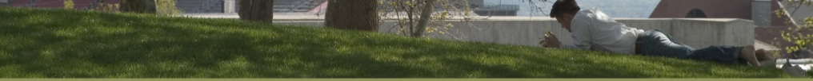

About us
Faculty & Staff
Undergraduate Students
Graduate Students
Courses & Syllabi
News & Announcements
Friends & Alumni
Contact us
Campus directory
Department calendar
Contact us
Disclaimer
Text only
Webmaster